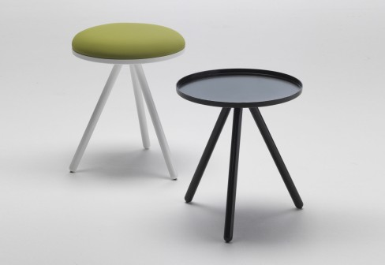
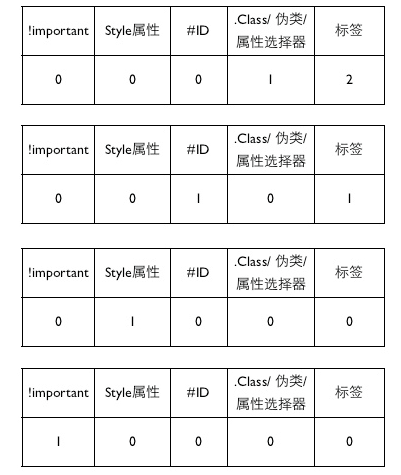
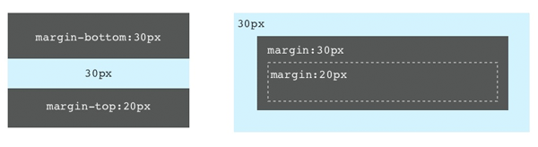
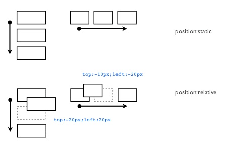
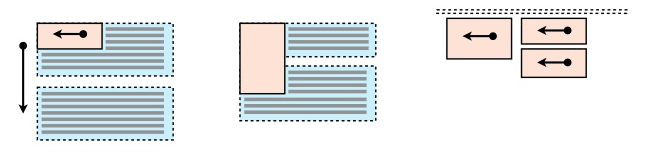
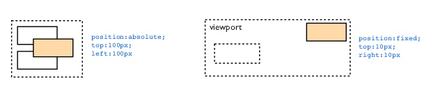
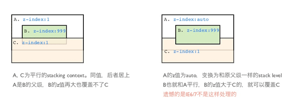

"活"的设计(Living Design, 简称LD)?
现象: 设计师只关心工程师做出来的跟设计稿是否完全一致
设计过程：IA / Wireframe > 交互 / Prototype > 视觉 / UI Spec, 只用一个设计稿能概括吗？
设计稿是"死"的, 文档也是"死"的，花大量时间精力不值的。流趟真实数据、可以操作、有"人气儿"，才是"活"的
"活"的设计?
生命体基本特征的类比：
- 体内平衡 ············ 能灵活适配内容的变化。文字长度、图片尺寸等各种可能情况
- 组织性 ············ 由UI元素构成(原子设计、卡片设计)
- 新陈代谢 ············ 新的UI元素不断替代旧的元素
- 生长 ············ 由最小可用的形态，不断迭代，持续完善
- 适应性 ············ 能适应用户使用环境(响应式设计, RWD)
- 反应性 ············ 响应用户各种操作（mouse、keyboard、touch、gesture），拥有各种状态(错误、失效、等待、处理...)
- 繁殖 ············ 基于现有的设计系统之上，快速构建新的产品原型
定义：LD是由有组织的UI元素构成，能适应不同的使用环境，响应用户的行为，灵活适配内容，可扩展、可继承的设计。不再只是满足单一情景下的特定形式。
4大基本特性: 适配性、响应性、组织性、扩展性。
围绕LD的工作流
1.产品目标 > 2.设计问题 > 3.构思模型 > 4.设计实现(ID&VD) > 5.真实的产品
PM
PRD
Designer
设计稿
FE
模板
BE
上线
User
专业圈子越来越大，但没有交集，自得其乐。乐趣点不再是最终的产品
努力影响前面的环节，信息不均衡，沟通艰巨，效果不佳
需要用一种观念来打破。LD包含的设计思想和技术问题，能建起共同追求的目标。一切为了做出一个更好的产品。
围绕LD，重构产品实现环节:
- 拆分设计过程：1. IA+ID、2. VD
- 根据IA+ID，快速原型。Designer/FE/BE在一起，不断迭代原型(由小到大的"生长"过程)。前期"粗猛快"，着重于架构上、模板组织
- 参考原型进行VD。是以UI元素为粒度的，系统化的设计，持续更新
- 后期还原所有细节
LD的设计思想
核心思想：解构和组合。简而言之，解构到信息元素的粒度，设定它的属性和行为，再通过设定结构关系组合起来。元素和结构在不同内容，不同使用环境下具有适配性。
如果简单按设计稿还原，会在开发最后阶段甚至上线后暴露出问题：
- 商品名通常很长，会拆行
- 真实图片的比例多样，现有缩略图的尺寸不符
- 左边的button会变化，如不是"分享的商品"而是"推荐的电影"
- 有button是链接，有的带交互
- 有没有评论内容
- 时间的显示
运用LD思想：
第1步，组织性原则的运用 － UI由有组织的元素构成。分解构成元素：
设定单个元素的属性和行为。属性包括：尺寸、最大范围、行高、字号、颜色、字数长度、对齐方式。行为包括：异步操作说明。
设计的范围缩小到更小的粒度，更容易发现细节，尽可能复用和扩展已有的成熟元素（扩展性）。
提前暴露细节，提前转换成技术问题(设计没细节，F2E没用武之地)，举例：
垂直居中：
图片展现，截图：
第2步，分解结构。1~4区域可变化，可组合(适配性原则)：
结构和元素后期需求变更，互不影响。
第3步，组合。设定组合关系，包括：间距、对齐。
第4步，实现。应用层的代码架构和模板的组织方式跟设计是一一对应的。表里如一。
Designer ＋ F2E紧密协作，才能达成。用技术消除障碍，举例：
"Preprocessors are the rosetta stone between Designers & Developers" 出自 Tim Hettler - CSSConf 2013 http://timhettler.github.io/cssconf-2013/
CSS3的语法：
.sampl1 { box-shadow:0 1px 20px rgba(0, 0, 0, .75); }
SCSS:
.sampl1 { @include rs-box-shadow(#000, .75, 120, 5, 0, 10); }
还原LD - 组织性
A项目的css - UI元素的组织性，一目了然
|-- libs.scss 基本的mixin库
|-- reset.scss 为这个应用订制的css reset(你会发现通用文件越来越难hold住全站，原则是拆解、定制)
|-- buttons.scss 通用UI元素－button
|-- font_icons.scss 通用UI元素－字体icon。适配性更强
|-- item.scss 通用UI元素－条目。
|-- progress_bar.css 通用UI元素－进度条
|-- tips.scss 通用UI元素－Tips
|-- list.scss 通用UI元素－列表
|-- layout_col2.scss 结构
|-- ui JS组件的样式文件
| |-- overlay.scss
| `-- tag_input.scss
|-- mod_create.scss 通用业务模块: mod_开头
|-- mod_edit_desc.scss
|-- mod_gallery_info.scss
|-- mod_gallery_intro.scss
|-- mod_gallery_list.scss
|-- mod_nav_list.scss
|-- mod_picture_list.scss
|-- mod_picture.scss
|-- mod_publish.scss
|-- mod_upload.scss
|-- member_list.scss 特定页面用到的业务代码
|-- user_profile_head.scss
`-- ui.scss 这个应用的全局css文件
理解开发思路："描述"式 vs. "绘制"式
标记 + 样式 ＋ 效果 + 行为。特点: 分离，层层叠加
标记：HTML (内容元素)
样式、效果：CSS (视觉风格、过渡、动画)
行为：Javascript (响应用户操作)

Living Divani "Bolle" stool
开发的过程是一步一步的：标记要展现的内容 > 风格化 > 响应用户行为 > （还可以再NB一些... 向前兼容)
HTML - HyperText Markup Language (超文本标记语言, 很酷的名字!)
Q: 标记什么？
内容元素(elements)和UI结构(structure)
so, 查看网页的源文件，清晰的界定元素和结构 (也是看源代码的思路)。
标记元素的标签有哪些(
HTML 4.01)？
标题：h1~h6
段落: p
缩写: abbr
强调: em
引用: blockquote / q / cite
地址: address
表单: form / fieldset / legend / label / button / input / select (optgroup / option) / textarea
代码: code / kbd / pre / samp / var
表格: table / caption / col / colgroup / thead / th / tbody / tr / td / tfoot
定义: dl / dt / dd / dfn
媒体: img / object / embed
列表: ul / ol / li
解构是抽象的过程。抽象是对问题更透彻的理解。(抽象能力是"大师"素质之一)
<div id="db-friends" class="mod">
<h2>我的朋友们</h2>
<div class="list">
<ul>
<li>
<a href="http://www.douban.com/people/iqingfeng/">
<img src="http://img3.douban.com/icon/u43045985-44.jpg" alt="一个马甲">
<span class="name">一个马甲
</span></a>
</li>
<li>
<a href="http://www.douban.com/people/kingszar/">
<img src="http://img3.douban.com/icon/u1373164-85.jpg" alt="Aray.S">
<span class="name">Aray.S</span>
</a>
</li>
</ul>
</div>
</div>
1. 标签的语义性。优先使用原生标签，不能表达意思时，借助命名(class, id)。如:span.name
2. 标签的闭合，空标签标不用闭合
3. 空标签：img / input / br / hr / link / meta
4. 标签的属性。如：<img src="http://img3.douban.com/icon/u1373164-85.jpg" alt="Aray.S">
通用属性: id / class / title / lang / style / dir / accesskey / tabindex / contenteditable
事件属性: onclick / onkeydown / oncontextmenu / ...more
5. 标签嵌套规则,
如: a不能嵌套a, p不能嵌套div等。例1
6. 标记 == 对内容的抽象
重新认识CSS语法
.mod {
margin-bottom:30px;
color:#666
}
- 一条rule: 选择器 { 属性名: 属性值; } (声明体)
- 选择器:
1. ID选择器 #xxx
2. 类选择器 .xxx
3. 标签选择器 div
4. 属性选择器 [name], [name="xxx"], [name~='xxx'], ...
5. 后继(Descendant)选择器 #xxx .xxx
6. 子选择器 #xxx > .xxx
7. 同级选择器 .xxx + .xx1, .xxx ~ .xx1
8. 伪类选择器 .xxx:hover
匹配顺序是从右向左: 想一想怎么写效率最高？
参考: CSS的选择器
- 命名:
1. 连接符-和_: 下划线在CSS1(1996), CSS2(1998)是非法的。CSS2.1(2001)变成合法的
2. ID和类名区分大小写。标签名不区分大小写。统一小写
3. CSS2以后命名支持Unicode
<div class="I❤Douban">content</div>
4. 不能用数字、双中划线开头
- 错误处理: 忽略无效，最近闭合
.mod的颜色？h1的颜色？
- AT-Rules:
@media print {
.mod {
margin-bottom:20pt;
}
}
@charset, @document, @font-face, @import, @keyframes, @media, @page, @supports
值和单位
绝对单位:
em, cm, mm, in, pt, pc, px
相对单位:
%, em, ex, (ch, rem, vw, vh, vmin, vmax)
Informative Summary of Relative Units
| unit
| relative to
|
| ‘em’
| font size of the element
|
| ‘ex’
| x-height of the element's font
|
| ‘ch’
| width of the "0" (ZERO, U+0030) glyph in the element's font
|
| ‘rem’
| font size of the root element
|
| ‘vw’
| 1% of viewport's width
|
| ‘vh’
| 1% viewport's height
|
| ‘vmin’
| 1% of viewport's smaller dimension
|
| ‘vmax’
| 1% of viewport's larger dimension
|
相对单位的应用, 例1
算术题：
body { font-size:14px; }
h1 { font-size:1em;width:50em; }
h1 p { font-size:2em;width:50em; }
层叠和继承
.list li {
margin: 10px 0 0 0;
font-size: 14px;
color: #666;
}
.list-member li {
font-size: 12px;
}
<div class="list list-member">
<ul>
<li>Member ID1
<li>Member ID2
<li>Member ID3
</ul>
</div>
根据CSS优先级将两条规则加在一起。实际为：
margin: 10px 0 0 0;
font-size: 12px;
color: #666;
继承，下列属性子元素可以继承父级的。
- 文本样式相关: font-family/font-size/font-style/font-variant/font-weight/letter-spacing/line-height/text-align/text-indent/text-transform/word-spacing
- 列表样式相关: list-style-image/list-style-position/list-style-type/list-style
- 颜色相关: color
好处：便用复用，代码精简。
<a href="#" class="btn btn-register">注册</a>
.btn抽象出来的通用UI元素。
引出系统设计的话题。抽象能力。
CSS规则的优先级关系
优先级可以精确计算
div.conent p { color:#000; }
#db-site-note p { color:#999; }
<div style="color:red">
<p>正文</p>
</div>
p { color:#000 !important; }

同值，按规则定义的先后顺序。
.list-member li {
font-size: 12px;
}
.list li {
margin: 10px 0 0 0;
font-size: 14px;
color: #666;
}
<div class="list list-member">
<ul>
<li>Member ID1
<li>Member ID2
<li>Member ID3
</ul>
</div>
避免用!important和标签的style属性
渲染的最小单位 -- 盒(Boxes)
盒，简单理解为所有被标签标记的元素，标签之外的看作匿名box。
决定如何渲染，一是计算尺寸(宽/高)，二是如何定位
盒模型，box的尺寸规格
4区域：内容区域、内边距(padding)、边框(border)、外边距(margin)
p { margin: 10px; }
p { margin: 10px 20px; }
p { margin: 10px 20px 5px; }
p {
width: 200px;
padding: 20px;
border: 1px solid #eee;
border-width: 1px 0;
border-style: solid none dashed;
margin: 10px 20px 5px 20px;
}
box的类型
- block box -- display: block;
- inline box -- display: inline;
- inline-block box -- display: inline-block;
- anonymous box
Normal Flow
block box(块级元素): width/height属性有效，不指定宽自动充满父容器(父级block元素)
inline box(行内元素): width/height属性无效，宽度由实际内容绝定，遇到父容器边缘折行（连续字符例外，word-wrap:break-word）
block格式化：1. 垂直、顺序布局 2. 折叠边距特性

inline格式化：1. 水平方向、顺序布局 2. 垂直方向的padding/margin无效
inline-block box: 内部按block格式化，外部按inline格式化
static position - 包括block格式化/inline格式化，left/right/top/bottom/z-index属性无效
relative position - 包括block格式化/inline格式化，left/right/top/bottom/z-index属性有效

Float
left/right/none。脱离当前文档流，定位到父容器的边缘，或另一个float box的边缘
不定宽情况下，实际宽度由内容决定
父容器水平方向空间不足时，向下移动直到可以放下
文档流中的inline box环绕float box
会和文档流中的block box重叠。用clear:both|left|right避免重叠
float会形成一个新的block formatting context(块格式化上下文，后面介绍)
float不会超出所在BFC的范围，也不会和其它BFC重叠
left/right/top/bottom/z-index属性无效

Absolute Position
脱离当前文档流。浮在其它元素上，z-index决定z轴上的关系
不定宽情况下，实际宽度由内容决定
float会形成一个新的block formatting context
left/right/top/bottom/z-index属性有效
left/right/top/bottom是距最近的absolute/relative定位的父级元素的值
fixed position是相对viewport定位

z-index，对relative/absolute/fixed有效。默认值auto。同值后面高于前面。

事件不能穿过覆盖层。(IE例外) 可用pointer-events:none改变
Block Formatting Context - 块级格式化上下文
MDC定义：
A block formatting context is a part of a visual CSS rendering of a Web page. It is the region in which the layout of block boxes occurs and in which floats interact with each other.
一个BFC是CSS可视化渲染页面的一部分(一个区域)，它是把一组块级box和浮动元素放在一起布局的区域。
特性：
- 不存在折叠边距
- 浮动元素不会超出它的范围
- 不会跟其它浮动元素重叠
形成新的BFC：
- float属性不为none
- overflow属性不为visible
- display属性是table-cell/table-caption/inline-block
- position属性不为static/relative
IE6/7没有BFC的概念。IE6/7的hasLayout与BFC类似。通常用zoom:1触发。